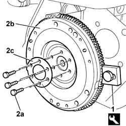
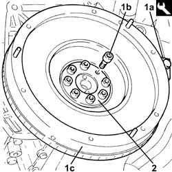
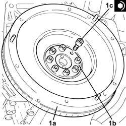

1024B22 engine flywheel - r r with clutch or gearbox removed
- Path
- Procedures > 10 ENGINE UNIT > 1024 CRANKSHAFT AND FLYWHEEL > 1024B ENGINE FLYWHEEL > 1024B22 engine flywheel - r r with clutch or gearbox removed
- Kind
- repair procedure (removal / refitting; the operation number is the code)
- Applies to
- all engines; all production periods
- Interactive page
- https://sloeber94.github.io/elrnDB-fPnd/en/#/2752437
Applies to: engines: 1.1; all production periods
 Removing
Removing
 Refitting
Refitting1. Fit the tool for locking the crankshaft.
 | Name | Country |
|---|---|---|
1 | Counter-torque | 1.860.846.000 |
2. Undo the bolts (2a) and remove the engine flywheel (2b) and ring nut (2c).

Applies to: engines: 1.2 8v; all production periods
Removing
Refitting1. Fit the tool for locking the crankshaft.
| Name | Country |
|---|---|---|
1 | Counter-torque | 1.860.846.000 |
2. Undo the bolts (2a) and remove the engine flywheel (2b) and ring nut (2c).
Applies to: engines: 1.3 JTD 16v; all production periods
Removing
Refitting1. With the flywheel lock (1a) fitted, undo the bolts (1b) and remove the engine flywheel (1c).
| Name | Country |
|---|---|---|
1a | Counter-torque | 1.860.846.000 |
2. Remove the flange.

Applies to: engines: 1.1; all production periods
Refitting
RemovingFit the engine flywheel and ring nut and tighten the fixing bolts to torque.
 | Fastening | Component | Ø | Value (daNm) |
|---|---|---|---|---|
- | Bolt | FLYWHEEL | M8 x 1.25 | 4.4 |
Remove the flywheel lock.
| Name | Country |
|---|---|---|
- | Counter-torque | 1.860.846.000 |
Applies to: engines: 1.2 8v; all production periods
Refitting
RemovingFit the engine flywheel and relevant ring nut and tighten the fixing bolts to torque.
| Fastening | Component | Ø | Value (daNm) |
|---|---|---|---|---|
- | Bolt | FLYWHEEL | M8 x 1.25 | 4.4 |
Remove the flywheel lock.
| Name | Country |
|---|---|---|
- | Counter-torque | 1.860.846.000 |
Applies to: engines: 1.3 JTD 16v; all production periods
Refitting
Removing1. Place the flywheel (1a), complete with flange(1b), back in its housing and fix it tightening the bolts (1c) to the recommended torque.
| Fastening | Component | Ø | Value (daNm) |
|---|---|---|---|---|
1c | Bolt | FLYWHEEL | M8 | (Crankshaft side) 4.0 ÷ 4.8 |

Topics that link to this page (5)
- 1020D26 FLYWHEEL SIDE OIL SEAL COVER - R+R
- 1020D38 flywheel side oil seal - replace
- 1024B10 engine flywheel - r + r for versions with manual gearbox
- 1024B12 engine flywheels rr for versions with manual gearbox and air contioner
- 1024B13 ENGINE FLYWHEEL - R.R. FOR MODELS WITH MECHANIC TRANSMISSION AND FOUR-WHEEL DRIVE